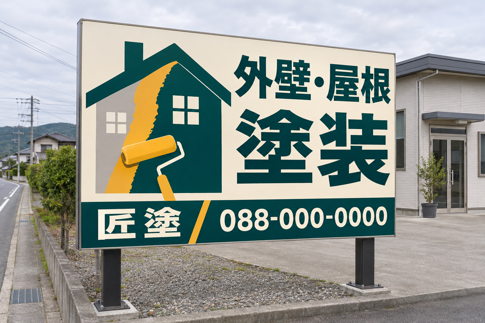
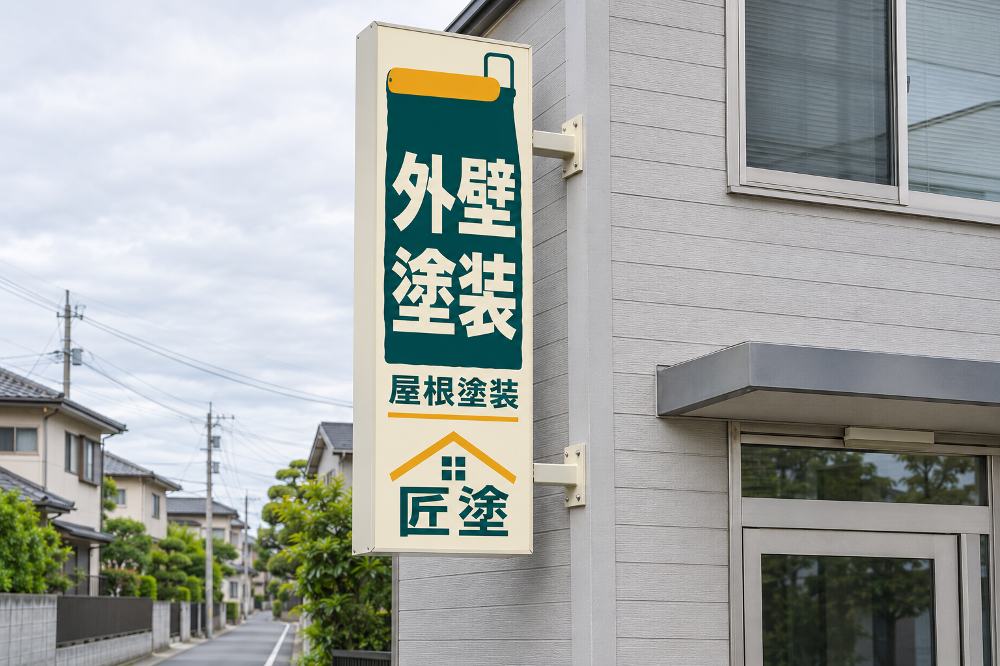
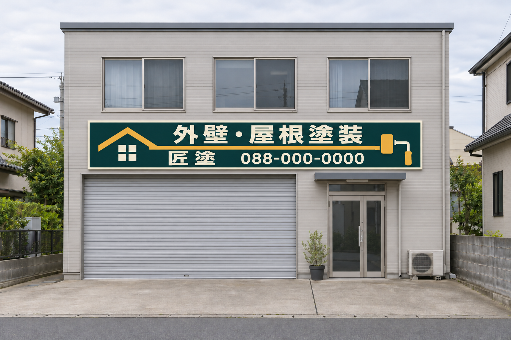

新案 01
大型の自立看板
家の塗り替えを大きな絵で見せるデザインです。道路から読むことを想定し、「塗装」の文字を大きくしました。

採用された横長看板に、新しい3案を追加しました。今回は塗装会社「匠塗」だけで展開しています。色をそろえ、それぞれ違う絵柄と配置にしました。
新案 01
家の塗り替えを大きな絵で見せるデザインです。道路から読むことを想定し、「塗装」の文字を大きくしました。

新案 02
ローラーで縦に塗った帯の中に、「外壁」「塗装」を配置しました。下段に「屋根塗装」と屋号を入れています。

新案 03
「住まいの塗り替え」を入口で案内する看板です。家の形をした色見本を重ね、親しみのある絵柄にしました。
採用済み
家の屋根とローラーを一本の線でつなぐ、これまでの採用案です。
